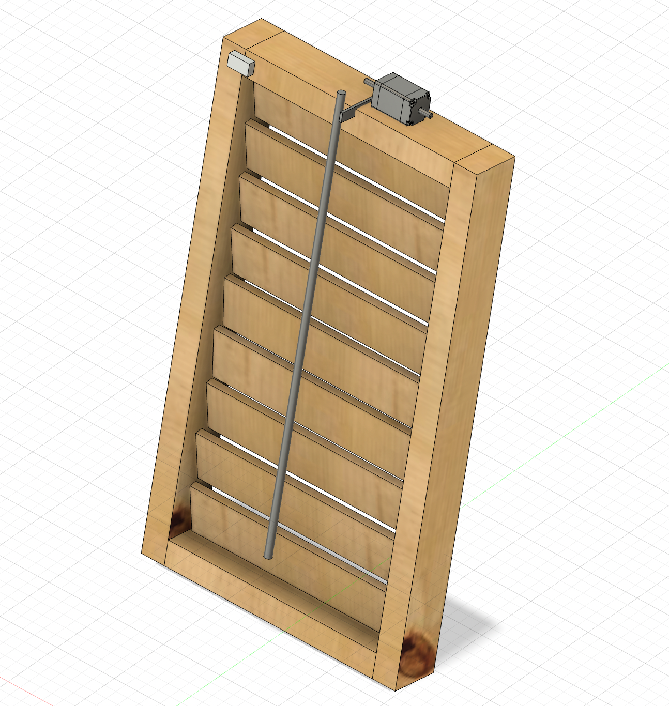

Considerations:
The "smart roof" will consist of columns of shutters, where all the slats are linked together by a central shaft (dowel). The dowel will be pulled up or down by a servo motor perched on top of the column: the rotation of the arm of the servo upwards will pull the dowel up, thus closing the shutters, while the movement of the arm in the other direction will push the dowel down, closing the shutters but with the opposite side of the slats facing out. This is important because I will have one face of the shutters painted black (a heat absorbant color), while the other face will be painted white (heat reflective). The system will know whether to pull the dowel up or down based on light and temperature sensors located on the frame of the shutter. When the light/heat is above a certain threshold (which I will likely determine by a function that takes both heat and light into account), the motor will move such that the white side faces out. Below the threshold, the black side will be facing out. This will then help temperature regulate the space beneath the roof, whether that be a bus stop shelter, a house, or perhaps even a vehicle. Here is the 3D model I created in Fusion.
In this diagram, the gray box on the upper left corner of the frame schematically represents the temperature and light sensors. One consideration I have to keep thinking about is that it would likely be more practical to have the temperature sensor measure the temperature of the room underneath the roof: after all, if it is cold outside but the room happens to be hosting a party with lots of body heat, perhaps it would be better for the roof to reflect heat to cool the building, rather than absorb sunlight. I didn't include it in the diagram, but there will be wires linking the sensor to the servo motor, depicted on top of the frame here. I will also need to figure out where to locate the breadboard and Arduino. Preferably, I will be able to use a smaller version of these so it isn't so bulky, but either way I will probably need to build a small housing for the circuitry which will be attached to the frame.
In terms of the motor aspect of this system, the schematic shown here does not accurately represent what a servo motor looks like. My idea is to have the arm of the servo motor positioned such that its rotation is exactly parallel to the vertical path the dowel will take. It will be somehow attached to the dowel (for example, with something like a straw which can be easily tuned to the exact length necessary, but preferably more elegant in appearance. However, I am not sure if a straw might be too stiff to allow for the servo to properly pull the dowel--this is something I will need to play around with). Thus, when the servo motor swivels upward, it will pull the dowel shaft upwards in an arcing motion. When the servo arm swivels downward, it will push the dowel shaft The arc motion is important because if the dowel were merely jerked straight upward, the slats would not turn properly: when opening these shutters, you need to pull the dowel out a little and then up in order to accomodate the arc of the slats themselves (as they do not have a constant rotational diameter).
Each slat will be attached to two pins on either end (which I will probably screw into the wood), which will slot into evenly spaced holes in the frame. The holes have to be big and deep enough to allow for these slats to smoothly rotate. Additionally, each slat will be attached to the dowel by a set of interlocking threaded eyelets, which will allow for more free motion between the dowels and the slats.
This model shown here only depicts one column of shutters. I envision my final project including multiple columns all next to each other and attached to each other, something large enough to cover a small roof. The other advantage of having multiple columns attached together is that each column doesn't necessarily have to be flipped to the same color. This could potentially allow for more fine-tuned temperature regulation. I still have to figure out what I want the scale of each column to be.
This is still quite a rough idea and I had a pretty difficult time modeling everything properly in Fusion, so this model definitely isn't fully accurate. However, it does capture the general idea, and it was helpful for me to make to get a better idea of how everything will fit together spatially.
For my MVP, I planned to make a set of motorized shutters that would open and close on a regular schedule. While for my final project it is important that the shutters move depending on input from light and heat sensors, for the MVP I decided to focus more so on the mechanical aspect to make sure I could get that working. I used the laser cutter to make the louvers and frame out of cardboard (in the final product I will use wood, but for right now it was just simpler to use cardboard). I used the drill to make evenly spaced holes along each side of the frame. Then I attached each louver to two dowels on either end and stuck the dowels through the holes, allowing them to rotate freely (see photo below).
The next step was to get all the louvers hooked up to a central rod so they can move in unison. I made the rod using a thin dowel. In connecting each louver to the dowel, it is important that the attachment is tight enough such that the movement of the dowel prompts rotation of the louver, and yet there must also be some degree of freedom because the louvers do not turn with constant radius, and so if the joints are too tight the movement is prohibitively restricted. With real plantation shutters, the rod is attached to the louvers using small interlocked eyelets (one attached to the louver and one to the rod). Since I do not have any of those eyelets, I fashioned my own out of wire. In the future, I believe it might be advantageous to design and 3D print these so they are more standardized (and perhaps also shape the louvers differently such that they include a small loop for the dowel's eyelet to connect to, rather than being a mere rectangle). Nevertheless, for the MVP, the wire worked fine. I made loops of thicker wire that were glued to the edge of each louver, and I friction-wrapped thinner wire around the dowel to make sure it stayed in place and then looped this thinner wire through the hook attached to the louver. It took some trial and error to attach them all properly, but by the end I had a set of 9 louvers that could all be rotated simultaneously simply by moving the dowel up or down.
After this, the next step was to motorize it. I decided to use a stepper motor because the positional specificity is helpful in terms of exactly shifting the shutters to display one side of the louvers versus the other side. When opening and closing the dowels by hand, it is easy to do so simply by pushing the dowel up or moving it down. However, when we do this with our hand, we are instinctively moving the dowel in an arcing motion to accomodate for the changing radius of rotation of the louvers--that is to say, simply pushing the dowel in a straight line is insufficient to properly rotate the dowels. Moreover, I had trouble visualizing how the rotational motion of the motor would translate to the semi-linear motion of the dowel. I considered attaching the dowel to a length of string which would be wound around the motor axle. Thus, the motor spinning would shorten the length of string, pulling the dowel towards it and closing the shutters. However, while this works for closing the shutters, it would not work to open them back up because a string can only be pulled, not pushed. Because of these issues, I decided instead to attach the motor to the axle of one of the louvers. This works because by rotating one of the louvers, all the other louvers rotate simultaneously since they are all connected thanks to the central dowel. Moreover, the rotational movement of the motor axle is much more compatible with the rotational motion of the louver.
At first, I tried to attach the motor to the dowel of the louver using a straw as a connector and gluing them both into the straw. This had worked with my kinetic sculpture, but since the stepper motor seems to move with greater force than the smaller motor I had been using previously, the straw method no longer worked (the glue was not enough to join the straw with the motor axle). As a result, it was necessary to 3D print a small attachment to connect the motor to the louver's dowel. I used calipers to measure the dimensions of the motor axle and designed a joiner accordingly. Here is the piece I printed:


With this joining piece, whose hole was the exact size and shape of the motor axle, it wasn't even necessary to use glue: I could simply jam the axle into the hole, and it was a perfectly tight fit.
The next problem I encountered was that the axle of the louver was slipping with respect to the louver itself. I had stuck the dowel into the side of the cardboard and secured it with glue, but this connection also was not sufficiently strong. This meant that the motor was turning but the louver was not actually rotating with it. I decided to print another joiner piece to connect the louver to its dowel, so it had to be able to grip the louver and also provide a hole in which to insert the dowel. Here is the piece I ended up creating.

This piece was able to clamp to the side of the louver as well as hold onto the dowel, all without any glue, because the dimensions matched exactly. With the addition of these two joiner pieces, I was finally successful at connecting the motor to the louver. Now, the turning of the motor rotated the louver, which in turn rotated all the rest simultaneously. Thus, the motor was able to close the shutters with one side of the louvers facing out, then rotate them 180 degrees until they were closed with the other side of the louvers facing out. I decided to paint one side of the louvers white to illustrate the fundamental purpose of my project. I did a pretty messy job with the painting, but it gets the point across.
In terms of programming the motion of the motor, I looked up the documentation for my speciic type of stepper motor, which was the 28BYJ-48 Stepper Motor with ULN2003 Driver. I set up the circuit according to the schematic shown below:

I borrowed the following example code from the documentation to get the motor spinning clockwise, then counterclockwise on a regular predefined schedule. This worked very nicely to demonstrate the mechanical feasibility of my project thus far.
I then adapted this code to include class organization, based on what I had learned last week setting up my light sensor. I believe this should work; however, I have not yet had time to test it out.
I realize I still need to adapt this code to get rid of the delay feature. However, since ultimately the motion of the motor will be dependent on signals from outside sensors, rather than on a predetermined schedule, I figure I will just get rid of the delay function at the same time that I program it to respond to sensor data. I have not yet had time to do this, but will continue to work on it. I envision a system involving a set of if statements, where the Arduino will be periodically reading signals from a set of light and heat sensors. If the readings reach above a certain threshold, then the "counterclockwise" function will be triggered (or whichever direction is appropriate) and the shutters should remain in that position until the condition of being above the threshold is no longer true. Whenever the reading drops below the threshold, then the "clockwise" function should be triggered, and the shutters should remain in that position until the threshold condition is once again no longer true. I will begin working on this aspect of the coding this coming week. In terms of output device, I currently have the stepper motor and motor driver set up such that a row of 4 LED lights turn on whenever the motor is properly connected to power. In the future, I want to make it such that the lights only turn on when the motor is actively turning, thus acting as a signal to bystanders that the shutters are at work.
There is definitely still a lot of work to be done. However, I am pleased with what I have done with the MVP so far, and I feel I have successfully proven that the mechanical aspect of my project will work. Here is a video of the shutters in action.
Since the whole point of my project is to produce tiles that will be mounted onto a roof, the first step of moving fom the minimum viable product, shown above, to the final version was to change the material from cardboard to something less flimsy and more durable that could (more or less) withstand the elements. I chose to use wood. I was able to adapt my original Fusion360 model for the frame and louvers and transfer it to wood. For the side planks of the frame in the cardboard version, I did not model the holes for the louver axles. Rather, I printed out just a flat sheet of cardboard and drilled the holes in afterwards so I could better measure them out by hand. But for this version, since I already had the cardboard model to go off of, I was able to model the distance between holes in Fusion so that it printed out already with holes. This eliminated risk of error and inaccuracy that might arise if I drilled by hand. Another problem I had to address was that in the cardboard version, when the frame is laid on a flat surface, the louvers will scrape against the surface as they flip, which impedes their motion. I thus had to make the frame thicker so that the louvers were raised further up and could have more clearance with the ground surface, allowing them to rotate without impedance. Here is the Fusion model I used for the frame side, holes included.
Before attaching the pieces of the frame to each other, I had to suspend the louvers between them. Here I encountered a problem. In the cardboard version, the louver axle was a piece of wood dowel that I had jammed into the side of the cardboard rectangle, between the flutes. Obviously, wood does not have flutes, so I would have to come up with a different way to attach the axle. I could not simply glue the wood dowel to one face of the shutter, because then it would not rotate with a consistent radius -- that is to say, I needed to attach the dowel exactly to the edge of the wood piece and not to either face. But because the wood piece is not very thick, there was not much surface area on the edge onto which to glue the dowel. Moreover, glue would be a messy and flimsy solution. I had initially envisioned using a 3D printed connector piece like the one I had used in the cardboard version, which would clamp to the louver and have a hole on the other side into which the wooden dowel could be glued. However, I realized that I could eliminate the need for glue by simply designing a piece that included both the clamping part and the axle dowel itself. With this in mind, I made a joint-dowel hybrid where one half clamped to the wood piece and the other half had a cylindrical protruding axle piece that could be threaded through the hole of the frame. Here is the piece I designed in Fusion. I designed the width of the clamp part to exactly match the thickness of the wood louvers, so the piece can simply slide onto the louver and stay in place without any glue.

I next had to devise a way to attach each louver to the central dowel that would allow all of them to move in unison. In the cardboard model, I made makeshift eyelets by wrapping pieces of wire around the central dowel and linking them to loops of wire stuck into the flutes of the cardboard louvers. This worked decently well; however, it involved a lot of tedious and inefficient manual labor, and also was imperfect because sometimes the wrapped wire would slip along the central dowel, preventing the louvers from all moving together in unison. My first idea to fix this was to 3D print eyelets that were already looped through each other, thus eliminating the tiresome step of wrapping and interlinking wire by hand. Essentially, the eyelet had to have one segment that would clamp onto each louver, and another segment that would be attached to the central dowel. These two segments had to be connected to each other such that movement of one prompted movement of the other, but there also had to be some freedom of motion between them since the louvers do not turn with constant radius. To this effect, this was the piece I designed (the central dowel would be threaded through the rectangular tunnel piece of each eyelet, one eyelet per louver.)

The left photo below shows how the eyelet links the louver to the dowel in close up, and the right photo shows how all the louvers (with their axles attached) were attached to the central dowel.
However, this did not work as well as I had hoped. The main problem was that the rectangular tunnel part was either too narrow for the central dowel, such that I could not even thread them on, or it was wide enough to thread them on but then the fit was too loose such that they would slip around. This was a big issue since the whole point was that the connection to the central dowel would not slip so they could move in unison. I realized that I could solve this problem by designing a 3D printed piece that included all the eyelets as well as the central dowel, already attached. Thus, rather than having to thread each eyelet onto the central dowel and get the fit exactly right, it would just come off the 3D printer as one big piece already ready to use. Here is the piece I ended up designing and printing.
As you can see, it was a bit too big for the Prusa printer, but I was able to solve this by rotating it and having it print diagonally. It was actually quite simple to design this in Fusion: I just took my original eyelet design, copied it nine times (once for each louver), lined them up, and then extruded a rectangular beam through the tunnels of all nine of them. I thus had a central dowel with nine eyelets already attached. This shape required a lot of supports to print, and so it was quite difficult to extricate after it finished printing. After a lot of hard work chipping away at the plastic with scissors, wire cutters, and box cutters, I managed to get a somewhat clean product.
The next order of business was to color my louvers. Since the whole point of my project is that the tiles turn black when it is cold out and white when it is hot out, it is really important that they actually have these colors. With the cardboard version, I had tried painting the louvers, which I did not enjoy because it got extremely messy and did not produce an even coat. This time, I decided to color the louvers with vinyl stickers instead. I used the box cutters to cut out strips of black and white vinyl of the exact size of the louvers, and stuck them to either side. This worked well--it looked clean, and the white side was very reflective while the black side seemed absorbant, which was appropriate for their purpose. Now, my louvers were properly colored. At this point, I was able to attach all of them to the central dowel and their own axles, and then insert them properly into the frame and assemble the frame around them.
The next step was to figure out where I would place the stepper motor I was using to rotate the louvers. In the cardboard version, as you may be able to see in the video from October 25 further up on this page, I had the stepper motor on the outside of the frame, attached to the axle of one of the louvers with a 3D printed motor attachment piece that perfectly fit onto both the motor axle and the louver dowel. The problem with this was twofold. For one, because the stepper motor was placed on the outside of the frame and only attached to the louver axle, it was not attached to anything stationary. This meant that when it began to spin, the motor actually would rotate itself around the louver axle, rather than rotate the axle as it was supposed to do. To prevent this, I had to hold the motor in place as it turned, which is obviously not ideal for a machine that I envisioned as being totally automatic. In this video below, you can see how the motor was attached in the cardboard version and the necessity of holding it down. (You can also see in this video how the louvers don't turn all the way properly and seem to stutter in the middle of rotation, a result of them scraping against the ground surface because the frame wasn't thick enough, as I described earlier.)
The other problem with having the motor on the outside of the frame had to do with the way I imagined these shutters eventually being implemented (beyond the scope of this class). I envision each set of shutters as being one roof tile, to be installed on top of already existing rooves (such as of homes, buildings, and bus stops/other smaller structures). In order to make best use of the color of the tiles, it is important that the tiles are able to be laid as close to each other as possible, with minimal empty space between them. This way, their changing color means that the whole roof is able to change color, rather than just sporadic small sections where individual shutters are placed. With the motor jutting outside of the shutter frame, it would be impossible to tesselate tiles closely together because the motor of each tile would be protruding between them, getting in the way. For this reason, I wanted the overall profile of the shutters to be as close to rectangular as possible. I would have to find some way to install the motor within the outer frame.
I used this motor, which luckily is pretty flat and compact. Through talking with Bobby and Nathan, we came up with the idea of attaching the stepper motor to the inside of the frame, and just shortening the length of the louver to which it would be attached so that it could all fit. I connected the motor to the louver with a 3D printed piece modified from the original louver axles. Basically, I kept the clamping part of the joint, but changed the dowel part to a tube shape that exactly matched the dimensions of the motor axle so it could be inserted and stay in place without any glue. Here is the connector I designed and printed.
Next, I sawed down one of the louvers to be shorter, then affixed the motor to the inside of the frame and attached the louver to it. (I chose to connect the motor to the bottommost louver because when I tried putting it on the middle louver, it started to interfere with the motion of the surrounding louvers.) Here you can see how it was attached.
I next attached the top piece of the frame to connect the two side pieces to each other and hold all the louvers more stably in place. I held off on attaching the bottom piece of the frame because I wanted to leave space to fit the electronic components. At this point, the physical construction of my shutters was finished!
Now it was time to wire my shutters. I used an Arduino Uno microcontroller and a ULN2003 motor driver. For my light sensor, I used this photoresistor and for my heat sensor, I used this thermistor. I used a breadboard to make the prototype. I put the light sensor in a voltage divider circuit so that the Arduino could read its outputs. The thermistor had a special pin for reading outputs so I didn't need to use a voltage divider for this one. The motor driver was also attached to the Arduino. The Arduino would tell the stepper motor to turn a certain amount of steps (which I determined by trial and error) whenever the sensor readings crossed a certain threshold. At first, I programmed it to just take into account the light sensor readings. When it was bright out, the shutters would display their white side to reflect away the light. When it was darker out, the shutters would display their dark side to absorb whatever light did exist. Here is a picture of my setup at this point (I will include all my code in the Code Section at the end).
Here is a video of it working! It responds to the higher light input (the phone flashlight) by turning white. Once that stimulus is taken away, the louvers flip back to black. I was pleased that it turns so smoothly and promptly.
At this point, I hadn't yet programmed the microcontroller to respond to the heat sensor readings, but I was using Serial print to read them out and I could see that they made sense and varied in response to temperature changes (ie., my hand holding the sensor to heat it up.) Since the circuitry was working on the breadboard, the next step was to solder it to a smaller breadboard so it would be more sturdy and compact. I had no experience with soldering other than the single pin we practiced in class, so this was a big learning curve for me. I found the whole process extremely satisfying and fun. Here are some pictures of my initial soldering. As you can see, I first soldered the heat sensor and the light sensor to two different boards in case I would want to separate the two sensors to measure at two different places. I ultimately discarded this idea, so had to unsolder one of the boards and combine them onto one.
Next, I decided to add a screen that would display the light and temperature readings. Bobby helped me set up a small OLED screen, and it ended up being a lot more intuitive than I had feared. Through reading the documentation, I learned how to print text onto the screen, how to shift where the text was displayed, and how to make scrolling text. This allowed me not only to display the readings, but also, whenever the shutters were in the act of flipping, the screen would scroll either "Turning to white..." or "Turning to black..." to inform the user. (I will show my code for this and everything else in the Code section at the end of the page.) I soldered this screen to the same breadboard as the sensors, as shown here. At this point, my circuitry was quite compact except for one problem: the pin-socket wires connecting the Arduino to the motor driver were way too long, making it hard to enclose the circuitry. To solve this, I unsoldered the Ground and Voltage pins from the motor driver and replaced them with normal wires, whose length I could adjust. Now I had compact circuitry! The next step was to enclose all of it in some housing to hide the mess. Here is a picture of my completed circuitry. You can see how the board contains all three elements: the OLED screen, the thermistor, and the photoresistor.
There were three main considerations for my housing: it has to enclose the wires, solderable breadboard, microcontroller and motor driver while still allowing the motor wires to enter and keeping the HDMI port free to access; it has to have cutouts so that the light and temperature sensors can still be exposed to the outside environment; and it is preferably at least somewhat weather proof to protect the electronic elements from the outside environment. To these ends, I decided to laser cut a wooden box with cutouts. I first modeled this with a cardboard box.